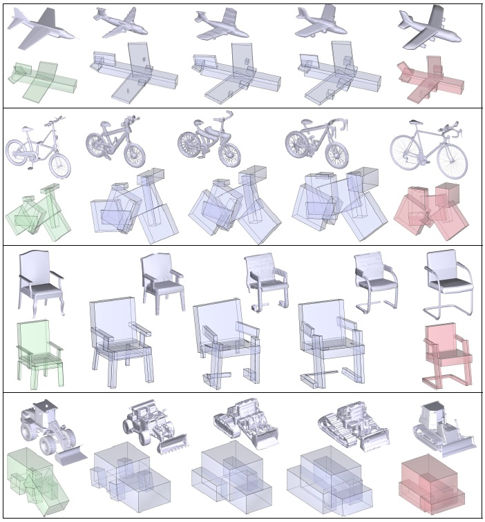

<!DOCTYPE html PUBLIC "-//W3C//DTD XHTML 1.0 Transitional//EN" "http://www.w3.org/TR/xhtml1/DTD/xhtml1-transitional.dtd">
<html xmlns="http://www.w3.org/1999/xhtml"><head>


  
  <meta http-equiv="Content-Type" content="text/html; charset=utf-8" /><title>GRASS - Kevin (Kai) Xu's Homepage</title>
  

  
  
  <link rel="shortcut icon" href="favicon.ico" type="image/x-icon" />

  
  <link href="style_pub.css" rel="stylesheet" type="text/css" />

  
  <script type="text/javascript">

  var _gaq = _gaq || [];
  _gaq.push(['_setAccount', 'UA-10108777-3']);
  _gaq.push(['_trackPageview']);

  (function() {
    var ga = document.createElement('script'); ga.type = 'text/javascript'; ga.async = true;
    ga.src = ('https:' == document.location.protocol ? 'https://ssl' : 'http://www') + '.google-analytics.com/ga.js';
    var s = document.getElementsByTagName('script')[0]; s.parentNode.insertBefore(ga, s);
  })();

  </script></head><body>
<div id="container">
<!-- header -->
<div style="font-weight: bold;" id="logo"><a href="#">Kevin (Kai) Xu's
Homepage</a></div>
<div id="menu">
<ul>
  <li style="font-weight: bold;"><a href="../index.html">Home</a></li>
  <li style="font-weight: bold;"><a href="../research.html" class="active">Research</a></li>
  <li style="font-weight: bold;"><a href="../publications.html">Publications</a></li>
  <li style="font-weight: bold;"><a href="#">Useful Links</a></li>
  <li style="font-weight: bold;"><a href="../contact.html">Contact Me</a></li>
</ul>
</div>
<!--end header -->
<!-- main -->
<div id="main">
<div id="text_top"><span style="font-weight: bold;"><br />
</span>
<br />
<br />
<table style="text-align: left; height: 50px; margin-left: 0px; width: 950px;" border="0" cellpadding="0" cellspacing="2">
  <tbody>
    <tr>
      <td style="text-align: justify; width: 944px;"><font style="color: rgb(255, 255, 214); font-family: Tahoma;" size="4"><br />
      </font>
      <div style="text-align: center;"><font style="color: rgb(255, 255, 214); font-family: Tahoma;" size="4"><span style="font-weight: bold;" /></font></div>
      <font style="color: rgb(255, 255, 214); font-family: Tahoma;" size="4"><span style="font-weight: bold;"> <br />
      </span></font>
      <div style="text-align: center;"><font style="color: rgb(255, 255, 214); font-family: Tahoma;" size="+2"><span style="font-weight: bold;"><br />
      <span style="font-family: Arial;">GRASS: Generative Recursive Autoencoders for Shape Structures<br />
      </span></span></font> </div>
      <font style="color: rgb(255, 255, 214); font-family: Tahoma;" size="4"> <br />
      </font>
      <div style="text-align: center;">
        <p><br />
          <font style="color: rgb(255, 255, 214); font-family: Tahoma;" size="+1"><span style="font-family: Arial;">Jun Li<small><sup>1</sup></small>,&nbsp; Kai Xu<small><sup>1,2,3</sup></small>,&nbsp;
            Siddhartha Chaudhuri<small><sup>4</sup></small>,&nbsp;Ersin Yumer<sup>5</sup>, &nbsp;Hao Zhang<small><sup>6</sup></small>,&nbsp;Leonidas Guibas<small><sup>7</sup></small></span></font><font style="color: rgb(255, 255, 214); font-family: Tahoma;" size="+1"><span style="font-family: Arial;"><br />
          <br />
          <br />
            </span></font><big style="color: rgb(255, 255, 214);"><sup>1</sup>National University of Defense Technology, &nbsp; <sup>2</sup>Shenzhen University,&nbsp;&nbsp;
            <sup>3</sup>Shandong University,&nbsp;&nbsp; <sup>4</sup>IIT Bombay,&nbsp;&nbsp; <sup>5</sup>Adobe Research,&nbsp;&nbsp; <sup>6</sup>Simon Fraser University,&nbsp;&nbsp; <sup>7</sup>Stanford University<br />
          <br />
            </big><font style="color: rgb(255, 255, 214); font-family: Arial;" size="-0"><br />
            </font><big style="color: rgb(255, 255, 214);">ACM Transactions
              on Graphics (SIGGRAPH 2017), 36(4)</big><br />
              <font style="color: rgb(255, 255, 214); font-family: Arial;" size="-0"> <span style="font-style: italic;"><br />
            <br />
              </span></font><br />
        </p>
      </div>
      <div style="text-align: center;"></div>
      <div style="text-align: center;"><br />
      <div style="text-align: justify; margin-left: auto; margin-right:auto; width: 899px;"><big style="color: rgb(255, 255, 214);">We develop GRASS, a Generative Recursive Autoencoder of Shape Structures, which enables structural blending between two 3D shapes. Note the discrete blending of translational symmetries (slats on the chair backs) and rotational symmetries (the swivel legs). GRASS encodes and synthesizes box structures (bottom) and part geometries (top) separately. The blending is performed on fixed-length codes learned by the unsupervised autoencoder, without any form of part correspondences, given or computed.</big></div>
      <br />
      <br />
      <br />
      <table style="text-align: left; width: 872px; margin-left: 34px; height: 744px;" border="0" cellpadding="2" cellspacing="2">
        <tbody>
          <tr>
            <td style="vertical-align: top; width: 99px; height: 7px;"><small>
            </small>
            <div style="text-align: right;"><small><font style="color: rgb(255, 255, 214); font-family: Arial Black;" size="+2"><small>Abstract</small></font></small></div>
            <small> </small></td>
            <td style="vertical-align: top; width: 753px; height: 7px;">
            <div style="text-align: justify; margin-left: 8px; width: 750px;">
              <p><big style="color: rgb(255, 255, 214);">We introduce a novel neural network architecture for encoding and synthesis
of 3D shapes, particularly their structures. Our key insight is that
3D shapes are eectively characterized by their hierarchical organization
of parts, which reects fundamental intra-shape relationships such as adjacency
and symmetry. We develop a recursive neural net (RvNN) based
autoencoder to map a at, unlabeled, arbitrary part layout to a compact code.
The code eectively captures the hierarchical structures of varying complexity
despite being fixed-dimensional: an associated decoder maps a code
back to a full hierarchy. The learned bidirectional mapping is further tuned
using an adversarial setup to yield a generative model of plausible structures,
from which novel structures can be sampled. Finally, our structure synthesis
framework is augmented by a second trained module that produces fine-grained
part geometry, conditioned on global and local structural context,
leading to a full generative pipeline for 3D shapes. We demonstrate that
without supervision, our network learns meaningful structural hierarchies
adhering to perceptual grouping principles, produces compact codes which enable applications such as shape classiffication and partial matching, and
supports shape synthesis and interpolation with signicant variations in
topology and geometry.</big><br />
                <big style="color: rgb(255, 255, 214);"> </big></p>
            </div>
            </td>
          </tr>
          <tr>
            <td style="vertical-align: top; width: 99px;"><br />
            </td>
            <td style="vertical-align: top; width: 753px;"><br />
            </td>
          </tr>
          <tr>
            <td style="vertical-align: top; text-align: right; height: 134px; width: 99px;"><font style="color: rgb(255, 255, 214); font-family: Arial Black;" size="+2"><br />
            <small>Paper</small></font></td>
            <td style="vertical-align: top; height: 134px; width: 753px;">
            <table width="600" border="0" cellpadding="2" cellspacing="2" style="text-align: left; height: 235px; width: 580px;">
              <tbody>
                <tr>
                  <td height="228" style="vertical-align: top; width: 122px;">
                  <div id="main2"><a href="../papers/li_sig17_grass.pdf"></a></div>
                  </td>
                  <td width="530" style="vertical-align: top; width: 408px;"><p><font style="color: rgb(255, 255, 214); font-family: Arial;" size="-0"><span style="font-weight: bold;"><br />
                    <br />
                    <br />
                    <br />
                    <br />
                    <br />
                    <br />
                    <br />
                    </span></font></p>
                    <p>&nbsp;</p>
                    <p><font style="color: rgb(255, 255, 214); font-family: Arial;" size="-0"><span style="font-weight: bold;"><br />
                      <br />
                      </span></font><font style="color: rgb(255, 255, 214);" size="3"><br />
                        <strong><a href="../papers/li_sig17_grass.pdf">PDF, 9.6MB</a></strong></font><font style="color: rgb(255, 255, 214); font-family: Arial;" size="-0"></span></font><br />
                    </p>
                  </td>
                </tr>
              </tbody>
            </table>
            </td>
          </tr>
          <tr>
            <td style="vertical-align: top; height: 7px; width: 99px;"><br />
            </td>
            <td style="vertical-align: top; height: 7px; width: 753px;"><br />
            </td>
          </tr>
          <tr>
            <td style="vertical-align: top; text-align: right; width: 99px;"><font style="color: rgb(255, 255, 214); font-family: Arial Black;" size="+2"><small><br />
Slides</small></font></td>
            <td style="vertical-align: top; width: 753px;">
            <table style="text-align: left; width: 427px;" border="0" cellpadding="2" cellspacing="2">
              <tbody>
                <tr>
                  <td style="vertical-align: top; width: 0px;">
                  <div id="main2"><a href="../slides/li_sig17_grass.pdf" target="_blank"></a></div>
                  </td>
                  <td style="vertical-align: top; width: 354px;"><br />
                  <br />
                  <br />
                  <font style="color: rgb(255, 255, 214);" size="3"><strong><a href="../slides/li_sig17_grass.pdf">PDF, ??MB</a><br /></strong></font>
                  </td>
                </tr>
              </tbody>
            </table>
            </td>
          </tr>
          <tr>
            <td style="vertical-align: top; height: 9px; width: 99px;"><br />
            </td>
            <td style="vertical-align: top; height: 9px; width: 753px;">&nbsp;</td>
          </tr>
          
          <tr>
            <td style="vertical-align: top; height: 392px; text-align: right; width: 99px;"><small><font style="color: rgb(255, 255, 214); font-family: Arial Black;" size="+2"><small>Images</small></font></small></td>
            <td style="vertical-align: top; height: 392px; width: 753px;"> <font style="color: rgb(255, 255, 214); font-family: Arial;" size="-0"> </font>
            <div style="text-align: center;"></div>
            <div style="text-align: center;"><br />
            <div style="text-align: justify; margin-left: 9px; width: 750px;"><big style="color: rgb(255, 255, 214);">An overview of our pipeline, including the three key stages: (a) pre-training the RvNN autoencoder to obtain root codes for shapes, (b) using a GAN
network to learn the actual shape manifold within the code space, and (c) using a second network to convert synthesized OBBs to detailed geometry.</big></div>
            </div>
            <font style="color: rgb(255, 255, 214); font-family: Arial;" size="-0"> <br />
            <br />
            </font> <font style="color: rgb(255, 255, 214); font-family: Arial;" size="-0"><br />
            </font>
            <div style="text-align: center;"></div>
            <font style="color: rgb(255, 255, 214); font-family: Arial;" size="-0"><br />
            </font>
            <div style="text-align: justify; margin-left: 9px; width: 750px;"><big style="color: rgb(255, 255, 214);"><span style="font-weight: bold;">Left:</span> Architecture of our generative adversarial network, showing reuse
of autoencoder modules.</big> <big style="color: rgb(255, 255, 214);"><span style="font-weight: bold;">Right:</span></big> <big style="color: rgb(255, 255, 214);">Confining random codes by sampling from a learned Gaussian
distributions based on learned root codes. Jointly learning the distribution
and training the GAN leads to a VAE-GAN network.</big><br />
            </div>
            <font style="color: rgb(255, 255, 214); font-family: Arial;" size="-0"> <br />
            <br />
            </font> <font style="color: rgb(255, 255, 214); font-family: Arial;" size="-0"><br />
            </font>
            <div style="text-align: center;"><br />
            </div>
            <font style="color: rgb(255, 255, 214); font-family: Arial;" size="-0"><br />
            </font>
            <div style="text-align: justify; margin-left: 9px; width: 750px;"><big style="color: rgb(255, 255, 214);">Linear interpolation between root codes, and subsequent synthesis, can result in plausible morphs between shapes with significantly different
topologies.</big></div>
            <font style="color: rgb(255, 255, 214); font-family: Arial;" size="-0"><br />
            </font>
            
            </td>
          </tr>
          <tr>
            <td style="vertical-align: top; width: 99px;"><br />
            </td>
            <td style="vertical-align: top; width: 753px;"><br />
            <br />
            </td>
          </tr>
          <tr>
            <td style="vertical-align: top; text-align: right; width: 99px;"><small><font style="color: rgb(255, 255, 214); font-family: Arial Black;" size="+2"><small>Thanks</small></font></small></td>
            <td style="vertical-align: top; text-align: justify; width: 753px;"><big style="color: rgb(255, 255, 214);"> </big>
            <div style="text-align: justify; margin-left: 8px; width: 750px;"><big style="color: rgb(255, 255, 214);">We thank the anonymous reviewers for their valuable comments and
suggestions. We are grateful to Yifei Shi, Min Liu and Yizhi Wang
for their generous help on data preparation and result production. Jun Li is a visiting PhD student of University of Bonn, supported by China Scholarship Council.
This work was supported in part by NSFC (61572507, 61532003,
61622212), an NSERC grant (611370), NSF Grants IIS-1528025 and DMS-1546206, a Google Focused Research Award, and gifts from
the Adobe, Qualcomm and Vicarious corporations.</big></div>
            <big style="color: rgb(255, 255, 214);"> </big></td>
          </tr>
          <tr>
            <td style="vertical-align: top; width: 99px;"><br />
            </td>
            <td style="vertical-align: top; width: 753px;"><br />
            <br />
            </td>
          </tr>
          <tr>
            <td style="vertical-align: top; text-align: right; width: 99px;"><p><small><font style="color: rgb(255, 255, 214); font-family: Arial Black;" size="+2"><small><a name="code">Code<br>Data</a></small></font></small></p></td>
            <td style="vertical-align: top; text-align: justify; width: 753px;"><big style="color: rgb(255, 255, 214);"> </big>
            <div style="text-align: justify; margin-left: 8px; width: 750px;"><big style="color: rgb(255, 255, 214);">We will soon release the source code of training and testing, a trained model, as well as our dataset:<br />
            <br />
            <big style="font-weight: bold;"><a href="https://github.com/junli-lj/grass">Github repository</a></big><br />
            <br />
            </big></div>
            <big style="color: rgb(255, 255, 214);"> </big></td>
          </tr>
          <tr>
            <td style="vertical-align: top; width: 99px;"><br />
            </td>
            <td style="vertical-align: top; width: 753px;"><br /></td>
          </tr>
          
          <tr>
            <td style="vertical-align: top; text-align: right; width: 99px;"><small><font style="color: rgb(255, 255, 214); font-family: Arial Black;" size="+2"><small>Bibtex</small></font></small></td>
            <td style="vertical-align: top; width: 753px;"><font style="color: rgb(255, 255, 214); font-family: Arial;" size="-1"> </font>
            <div style="text-align: left; margin-left: 6px; width: 730px;"><font style="color: rgb(255, 255, 214); font-family: Arial;" size="-1"><font style="color: rgb(255, 255, 214); font-family: Arial;" size="-1">@article
{li_sig17,<br />
&nbsp;&nbsp;&nbsp; title = {GRASS: Generative Recursive Autoencoders for Shape Structures},<br />
            &nbsp;&nbsp;&nbsp;
            author
= {Jun Li and </font>Kai Xu and Siddhartha Chaudhuri and Ersin Yumer and Hao Zhang and Leonidas Guibas},<br />
            &nbsp;&nbsp;&nbsp;
            journal
= {ACM Transactions on Graphics (Proc. of SIGGRAPH 2017)},<br />
            &nbsp;&nbsp;&nbsp;
            volume
= {36},<br />
            &nbsp;&nbsp;&nbsp;
            number
= {4},<br />
            &nbsp;&nbsp;&nbsp;
            pages
= {to appear},<br />
            &nbsp;&nbsp;&nbsp;
            </font><font style="color: rgb(255, 255, 214); font-family: Arial;" size="-1">year
= {2017}<br />
}</font></font></div>
            <font style="color: rgb(255, 255, 214); font-family: Arial;" size="-1"> </font></td>
          </tr>
        </tbody>
      </table>
      <br />
      <br />
      <br />
      <br />
      <div id="main2" style="text-align: center;"><a target="_blank" href="http://english.siat.cas.cn/"></a><a target="_blank" href="http://english.nudt.edu.cn"></a><a target="_blank" href="http://www.sfu.ca/"></a><a target="_blank" href="http://www.tau.ac.il/index-eng.html"> </a><a target="_blank" href="http://www.iitb.ac.in/"></a><a target="_blank" href="https://research.adobe.com/"></a><a target="_blank" href="http://www.sfu.ca/"></a><a target="_blank" href="http://stanford.edu/"></a></div>
      <br />
      <br />
      <ul>
      </ul>
      <div style="text-align: center;"><a href="http://english.nudt.edu.cn/"> </a></div>
      <ul style="text-align: center;">
        <a href="http://english.nudt.edu.cn/"><font style="color: rgb(255, 255, 214); font-family: Tahoma;" size="+2"><span style="font-family: Arial;" /></font></a><a href="#menu"></a><a href="../index.html"></a><font style="color: rgb(255, 255, 214); font-family: Tahoma;" size="+2"> </font>
      </ul>
      <font style="color: rgb(255, 255, 214); font-family: Tahoma;" size="+2">&nbsp; </font></td>
    </tr>
  </tbody>
</table>
<b><br />
</b> </div>
</div>
<!-- end main -->
<!-- footer -->
<div id="footer">
<div id="footer_left">© Copyright 2011 Kevin (Kai) Xu<br />
</div>
<div id="footer_right">Latest update: 2014-03-29 &nbsp; <small><a href="http://www.realitysoftware.ca/services/website-development/design/">Web
design</a> released by <a href="http://www.flash-gallery.org/">Flash
Gallery</a></small> </div>
</div>
<!-- end footer --> </div>

</body></html>